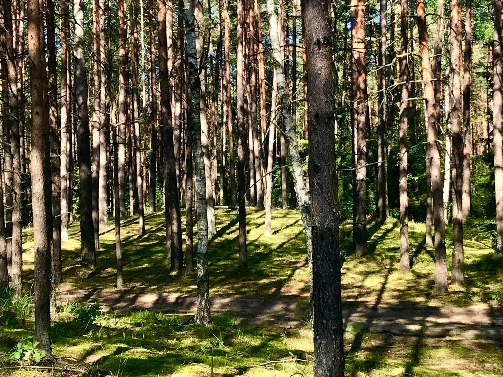

Pradžia / Temos / Dėmesys, impulsyvumas ir ADHD
Dėmesys, impulsyvumas ir ADHD
Suaugusiems, turintiems ADHD diagnozę, ir tiems, kurie atpažįsta save jos simptomuose.
Kaip tai gali jaustis
Daug suaugusiųjų su ADHD metų metus girdėjo, kad yra tingūs, „per daug“ ar nepakankamai stengiasi. Dažnai jie tuo ir patikėjo.
ADHD gali reikšti, kad nuobodžiose užduotyse prarandate dėmesį, o įdomiose pamirštate laiką, pradedate daug darbų ir mažai užbaigiate, pamirštate susitikimus, veikiate nepagalvoję ar jaučiate vidinį neramumą. Kartu jis gali atnešti smalsumo, kūrybiškumo ir daug šilumos.
ADHD yra viena temų, su kuriomis turiu daugiausia patirties. Konsultacijose žiūrime, kas jums sunku dabar ir kas jau veikia.
Kas suaugusiems su ADHD dažnai būna sunkiausia
- Pradėti ir užbaigti
Žinoti, ką daryti, retai būna problema. Galime pažiūrėti, kas trukdo, ir rasti jūsų smegenims tinkamą struktūrą.
- Laikas
Vėlavimas, praleisti terminai, neįvertinta, kiek kas užtruks. Maži praktiški pokyčiai gali labai padėti.
- Emocijos
Daug suaugusiųjų su ADHD emocijas jaučia stipriai ir reaguoja greitai. Tai dažna, ir su tuo galima dirbti.
- Gėda ir savikritika
Metai, kai jautėtės kitokie, palieka pėdsaką. Galime pažiūrėti, kokią istoriją pasakojate apie save, ir rasti vietos švelnesnei.
Jei norėtumėte susipažinti su kitais suaugusiaisiais su ADHD, užsukite į internetinę grupę suaugusiems su ADHD.
Daugiau skaitykite (anglų kalba)
Kada geriau tiktų kita pagalba
Aš galiu netikti, jei ieškote krizės intervencijos, oficialios diagnozės, medikamentinio gydymo ar jo tikslinimo arba labai struktūruotų trumpalaikių konsultacijų. Tokiais atvejais galėčiau tik nukreipti jus pas tinkamesnį specialistą.
Praktinė informacija
- Trukmė
- 50 minučių
- Kaina
- 50 € klientams Lietuvoje, 80 € klientams užsienyje
- Kur
- Internetu, lietuvių arba anglų kalba
- Pirmas žingsnis
- Nemokamas 20 minučių pokalbis, skirtas pasitikrinti, ar tinkame vienas kitam, ir pradėti formuoti konsultacijų tikslus